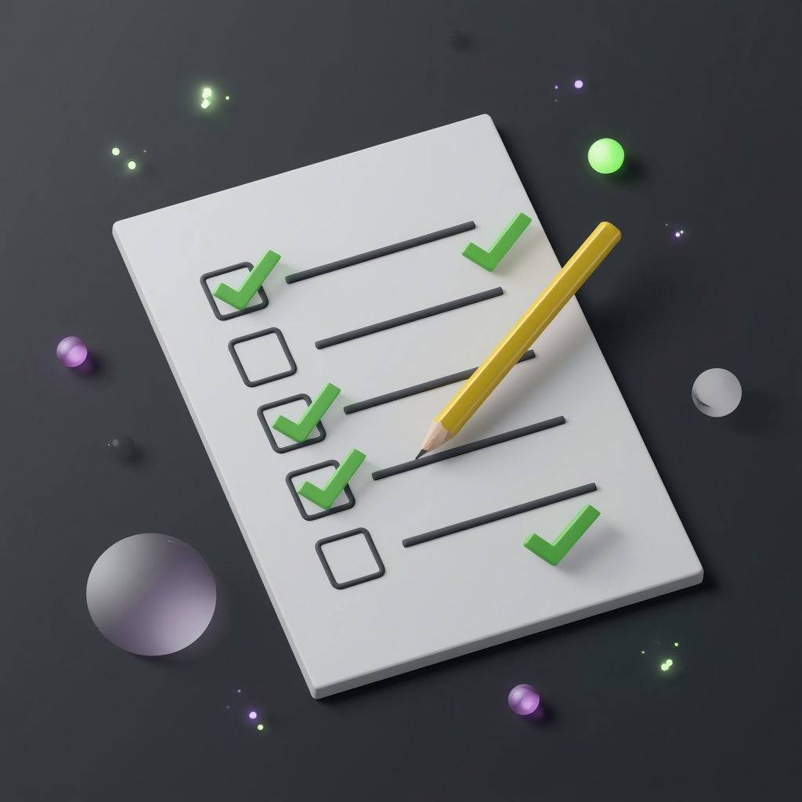

Цель — провести родителя к конкретному времени диагностики и живому подтверждению присутствия.

Для новичка важно с самого начала понимать, что такое «хороший результат».
Нажмите на шаг, чтобы раскрыть — задача, ключевые мысли и готовые фразы.
Задача
Быстро установить контакт и показать, зачем вы звоните.
Ключевые мысли
Задача
Снять тревогу «меня сейчас будут долго грузить» и показать структуру разговора.
Задача
Понять исходные данные и показать интерес к ребёнку, а не просто к «клиенту».
Вопросы
Задача
Дать родителю проговорить свои ожидания и показать, что вы его слышите.
Задача
Связать воедино ребёнка, текущую ситуацию и цель родителя. Это важный маркер: родитель слышит «меня поняли».
Задача
Понять, насколько человек готов к регулярным занятиям — не «случайный» ли это человек.
Задача
Закрепить, что родитель тоже включён, а не «кинул ребёнка в Zoom и ушёл».
Задача
Заземлить всё в конкретном дне и часу. Делаем последовательно.
Ждём чёткое «да».
Задача
Клиент чётко знает, где ждём его «Да, будем» — это ключ к явке.
Сделай их сразу после изучения модуля — не откладывай практику.
Прочитать весь скрипт 3 раза вслух, записать себя на аудио.
Потренировать отдельно Шаг 5 (перефраз цели) и Шаг 9 (фраза «вы будете онлайн…»).
В паре: один играет родителя с разными запросами, второй — оператор строго по структуре шагов 1–11.